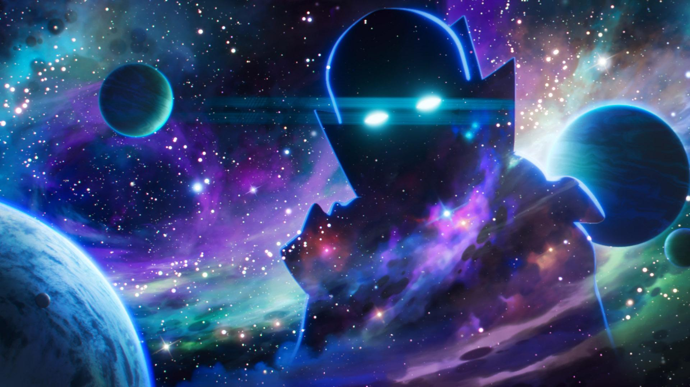

Tu plan funciona mejor de lo esperado. La energía del Teseracto se libera en una explosión que desactiva las naves enemigas y destruye el portal dimensional.
Cuando todo parece haber terminado, descubrís que el artefacto se fusionó con tu cuerpo. Ahora podés controlar parte de su energía y percibir alteraciones en el espacio y el tiempo.
Thor y la Capitana Marvel te explican que tus nuevos poderes podrían ser necesarios para proteger otros mundos.
Después de despedirte de los Vengadores, decidís abandonar la Tierra para explorar el universo y evitar que otras amenazas cósmicas pongan en peligro diferentes civilizaciones.
Ya no sos solamente un héroe de la Tierra: ahora sos el guardián de una nueva era cósmica.